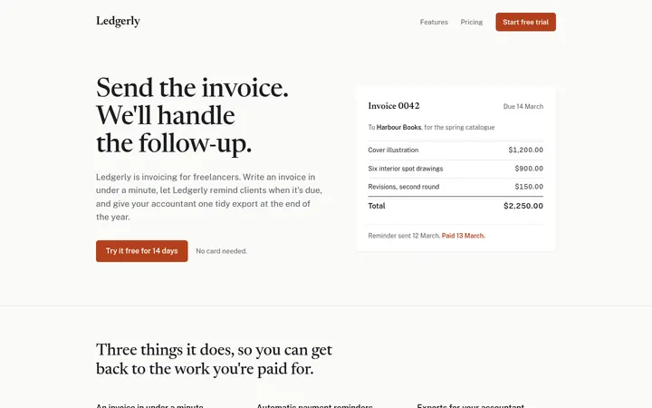
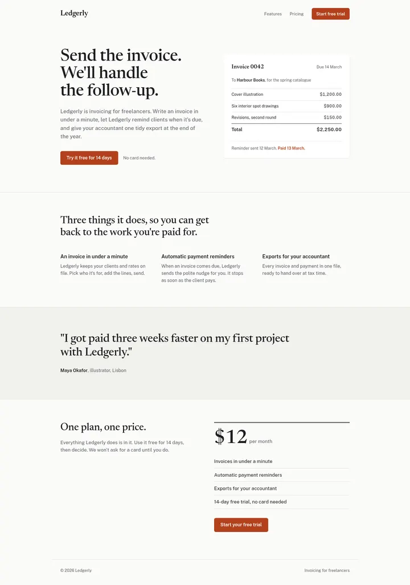
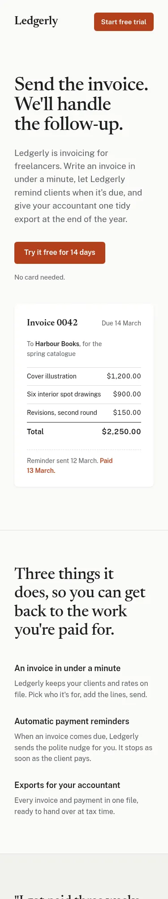

← Humanizer & anti-slop skills: the interface test
Gesso-Build/skills: test run, 2026-11-08
Claude Code (Claude Opus 5.5) used this tool on an AI-looking landing page, asked to make it look and read like a person designed it, keep 11 facts and return one self-contained file. Measured in Chromium at 1440 px and 375 px; judge: gpt-6-astra. Repo commit 1c3908b7efb5. All results · Prompt



Measured
| AI tell | Before | After |
|---|---|---|
| Purple gradients | 16 | 0 |
| Gradient text | 8 | 0 |
| Frosted-glass blur | 4 | 0 |
| Blurred colour blobs | 3 | 0 |
| Coloured glows | 8 | 0 |
| Emoji | 26 | 1 |
Facts: 11 of 11 kept · Marketing words: 15 → 0 · Headline font: Newsreader · Phone: fits the screen · 1.7 minutes
Rules broken:
- None
Judge: 4/5. AI tells it still saw: generic SaaS navigation and CTA pattern, formulaic benefits-section framing, slightly polished, marketing-generated copy. A restrained editorial redesign with a clear invoicing-specific visual and distinctive serif typography; it feels deliberately art-directed, though the structure still follows a familiar SaaS landing-page template.
The whole page



